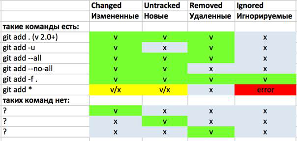

git add - В чем разница между git add ., add -A, add -u и add *?
4-6 минут
Давайте обозначим категории файлов, которые вообще можно добавлять. Будем использовать те же обозначения, что и в выводе команды git status -s:
M - (modified) отслеживаемые, изменились с прошлого коммита, еще не добавлены
D - (deleted) отслеживаемые, удалены после прошлого коммита, еще не добавлены
? - (untracked) неотслеживаемые, не запрещены к добавлению
! - (ignored) неотслеживаемые, запрещены к добавлению (например, в .gitignore)
Первое различие — в том, что . — это путь (аргумент), а всё остальное — параметры. Те и другие не исключают друг друга и возможны их сочетания.
Путь . обозначает текущую директорию, т.е. ту, в которой была запущена команда.
Начиная с Git версии 2.0, поведение команды add приведено в соответствие с поведением commit и других комманд. Теперь . обозначает не всю рабочую область (working tree), а текущий путь в этой области.
Таким образом, если вы выполняете команду add не в корневой директории проекта (той, где лежит .git/), то будет обработано содержимое только текущей директории.
Чтобы явным образом дать указание Git работать со всей рабочей областью, используйте :/:
# работает одинаково из любой директории, добавляет всю рабочую область
git add :/
# путь относительно корневой директории
git add :/path/to/files/
# работает только в текущей директории
cd test
git add .
# эквивалентно этому:
git add :/test
# путь относительно текущей директории
cd test
git add ./path
# эквивалентно этому:
git add :/test/path
Если не указан никакой путь к добавляемым файлам, то большинство команд работает во всей рабочей области, а git add и git add --no-all просто не работают.

git add .
git add '*'
Git версии 2.0+ просматривает текущую папку и добавляет файлы M, D, ?.
Git версии 1.х просматривает всю рабочую область и добавляет файлы M, D.
Если '*' дается в кавычках, то обрабатывать его будет Git и это эквивалентно git add .. Исключение: из-под cmd.exe git add '*' не сработает, используйте git add . или git add *.
git add --no-all :/
git add --ignore-removal :/
Эта команда в Git v. 2.0+ работает как git add . в Git v. 1.x, то есть добавляет измененные и новые файлы M, ? во всей рабочей области. Для этой команды обязательно указывать путь.
git add --no-all . #добавляет измененные и новые файлы в *текущей директории*
git add --no-all path1/ path2/ # добавляет измененные и новые файлы в путях *относительно текущей директории*
git add -u
git add -update
Git обновляет (update) статус уже отслеживаемых файлов т.е. M, D.
git add -A
git add --all
git add --no-ignore-removal
Эти варианты эквивалентны и добавляют M, D, ?.
Без точки — из всей рабочей области:
git add -A = git add -A :/ = git add :/ + git add -u
С точкой — только текущий путь:
git add -A . = git add . + git add -u .
git add *
Этот синтаксис лучше не использовать, и вот почему:
При этой команде shell (или bash или другая командная оболочка) просматривает рабочую область и отдает Git список файлов на добавление. Система сработает таким образом, что будут найдены абсолютно все не-скрытые файлы, находящиеся в заданном корне. Вы можете посмотреть на этот список, выполнив echo *. ( Исключение: из-под cmd.exe git add * работает так же как git add '*' на shell/bash. )
Произойдет следующее (здесь мы видим сразу несколько причин не использовать add *):
Разнообразие параметров (-u, -A, --no-all) нужно для того, чтобы можно было добавлять разные группы файлов. Конкретно --no-all . было добавлено для того, чтобы реализовывать старое поведение add . в версиях 1.х.
Похоже, что несмотря на это, Git не позволяет добавлять конкретные группы файлов одной командой (см. сводную таблицу в начале).
Тонкости в использовании . и :/ нужны для того, чтобы каждую команду можно было выполнять как на всю рабочую область, так и на конкретную подпапку.